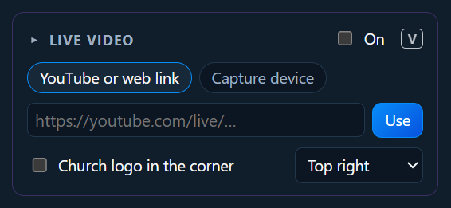
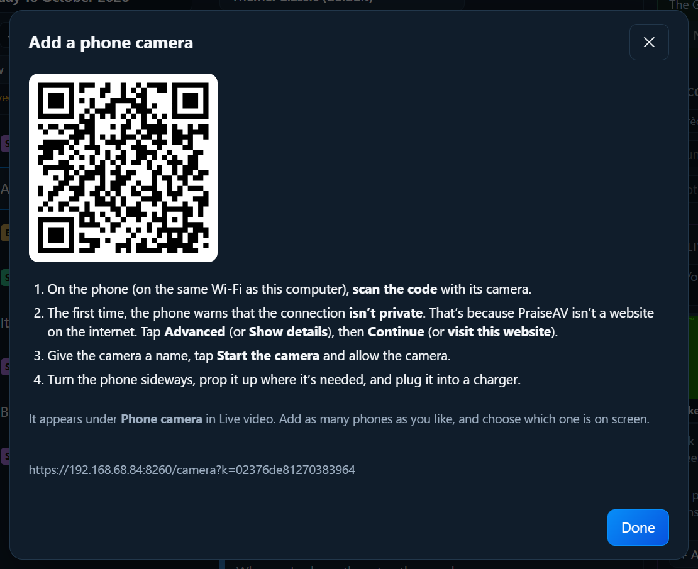

Screens and livestream
Live video on the screen
PraiseAV can put live video on the congregation screen with the words over it or under it. For example:
- A camera on the preacher, so people at the back can see (a big room, or an overflow hall).
- A YouTube live stream from another church, for a joint service.
Open Live video in the right-hand column.

A camera
- Plug the camera in. Most cameras need a USB capture device to connect to a computer (see Hardware). Webcams just plug in.
- Click Capture device, and choose the camera from the list. Not there? Click Refresh.
- Choose the sound: usually No sound (the sound desk has it).
- Choose how the words show:
- Words in a strip along the bottom: the picture stays clear.
- Words full screen over a dimmed picture.
- Tick On (or press V).
Songs and verses show with the video. Videos, pictures and the logo still show full screen when you put them on; the camera comes back after.
Phone cameras
Old phones make good cameras. Prop one up where it’s needed, on the church Wi-Fi, and its picture comes into PraiseAV. A few donated phones can be your cameras until there’s money for proper ones.
In Live video, click Phone camera, then + Add a phone camera. A QR code appears.

On the phone, on the same Wi-Fi as the PraiseAV computer, scan the code with its camera.
The first time, the phone warns that the connection isn’t private. That’s because PraiseAV is on your computer, not a website on the internet. Tap Advanced (or Show details), then Continue (or visit this website). Each phone asks once.
Give it a name (“Pulpit camera”), tap Start the camera, and allow the camera.
Turn the phone sideways, prop it up, and plug it into a charger.
The phone’s picture appears in Live video. Click it to put it on screen. The phone says ● LIVE on screen while PraiseAV is showing it.
Add as many phones as you like. Each phone remembers its name, so next time just open the page again and tap Start the camera.
On the phone, ⛶ Full screen helps you line up the shot, and 🌙 Dark screen keeps sending with the screen black to save battery.
Choosing between cameras
With more than one camera, Live video shows every camera’s live picture side by side: phones and cameras plugged into the computer together. Click a picture to cut to it. The one on screen has a red border and LIVE.
For a bigger view, click ⛶ Bigger: all the cameras fill this computer’s screen, so whoever is choosing the shots can see them clearly. Click one to cut to it there too, and close it when you’re done.
A phone that stops sending (flat battery, off the Wi-Fi) shows Not connected and can’t be chosen. Its ✕ takes it off the list.
Sync… beside the camera pictures keeps a recording's sound in step with each camera. See Recording: sound and picture in step.
The first time phone cameras are switched on, Windows may ask on the PraiseAV computer whether to allow PraiseAV on private networks: choose Allow.
YouTube or a web link
- Click YouTube or web link.
- Paste the link (for example
https://youtube.com/live/…) and click Use. - Tick On.
The video sits at the top with the words underneath: YouTube doesn’t allow anything on top of its player.
The logo in the corner
Tick Church logo in the corner and choose the corner. This works with or without live video. Choose your logo in the Media tab first, or a different picture just for the corner (see Media).
Recording instead
No livestream? Record the service: with Live video on, the recording shows the camera with the words.
Livestreaming is different
This page is about showing video in the room. To send your service out to YouTube or Facebook, see Livestream and ATEM.